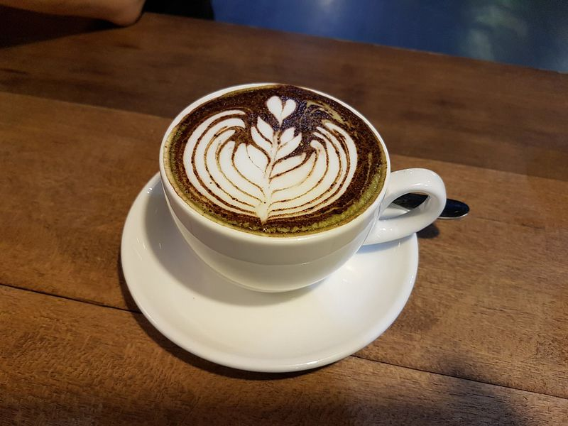

When it comes to coffee, we tend to stick to what we know, with our morning coffee often setting us up for the rest of the day. While some may enjoy the pure caffeine kick, others may enjoy the full flavoured variety, as well as the cheeky sugar hit to get them over the bitter coffee taste.From the complete coffee novice through to those looking to get into the barista business, knowing the difference between the many types of coffee is important.
We checked online to see how many types of coffee beverages there are… it turns out, there’s quite a lot. Over thirty different types were listed on one website, and more than forty on another.
| DRINK OF MENU | DRINK OF NAME | PRICE | ABOUT |
|  | Mocha Coffee | RM3.90 | Caffè mocha, in its most basic formulation, can also be referred to as hot chocolate with (e.g., a shot of) espresso added. Like cappuccino, caffè mochas typically contain the distinctive milk froth on top, although, as is common with hot chocolate, they are sometimes served with whipped cream instead. |
| Espresso Coffee | RM2.70 | Espresso is a type of coffee made by brewing in a special way. It is made by forcing a small amount of nearly boiling water under pressure through finely ground coffee beans. | |
 |
Cappucino Coffee | RM4.20 | Outside of Italy, cappuccino is a coffee drink that today is typically composed of double espresso and hot milk, with the surface topped with foamed milk. |